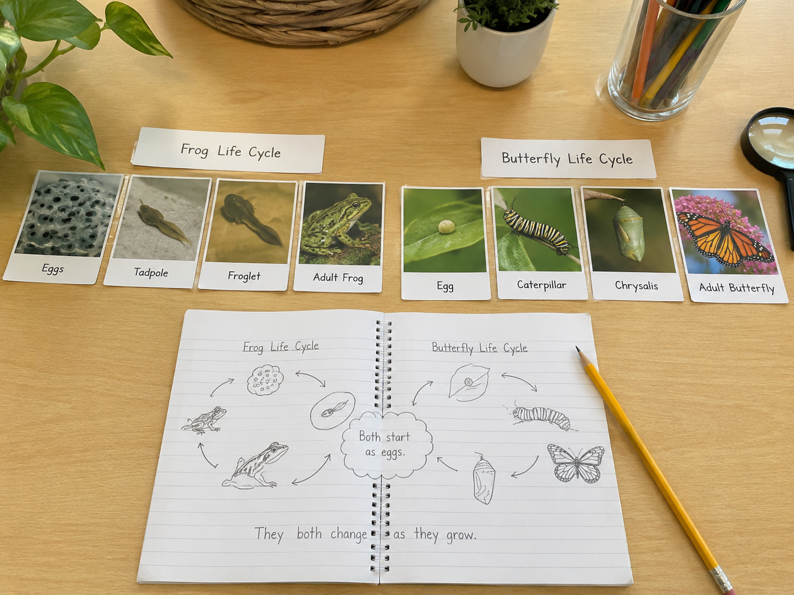

Every living thing is born, grows, and eventually reproduces. But the path from beginning to adult looks different for each kind of animal. What patterns can you find when you compare them?
🐛 I can compare the life cycles of two different animals.
🔄 I can identify patterns in how animals grow and change.
📊 I can use evidence from diagrams to explain similarities and differences.
Start here. Learn the words you will use today.
A frog doesn't look anything like a tadpole. A butterfly looks nothing like a caterpillar. But they're the same animal — just at different points in their lives.
Think about an animal you know. Does its baby look like the adult? How does it change as it grows?
Now learn the main science idea.

Every animal starts somewhere and ends somewhere. That journey — from the very beginning to the end of its life — is called a life cyclelife cycleThe stages an organism goes through from birth to death..
All life cycles share the same basic pattern: birth, growth, reproduction, and death. But the way each animal moves through those steps is different. Some take days. Others take decades.
A butterfly doesn't just grow bigger — it completely changes form. That dramatic change is called metamorphosismetamorphosisA major change in body form during an animal's life cycle.. A caterpillar wraps itself in a chrysalis and emerges looking completely different.
A frog also goes through major changes. It starts as a water-breathing tadpole and becomes an air-breathing frog. Other animals, like dogs or birds, change in smaller ways — they mostly just grow larger.
When scientists compare life cycles, they're looking for patterns — things that are the same across different organisms. They also notice what's different. That's exactly what you'll do today.
Comparing two life cycles side by side is one of the best ways to understand them both. When you see what's similar and what's different, you start to understand how life cycles work.
All animals have a life cycle that includes birth, growth, reproduction, and death. The stages and how they look are different for each kind of animal — but the pattern is the same.
Scientists compare life cycles to find those patterns. When you spot what's similar across different organisms, you're thinking like a scientist.
Curious? Go Deeper
Not all metamorphosis looks the same. A butterfly goes through four stages — egg, larva, pupa, adult. That's called complete metamorphosis. But a grasshopper goes through just three: egg, nymph, adult. The nymph already looks a lot like the adult, just smaller and without wings. That's called incomplete metamorphosis.
Some animals go through no metamorphosis at all. A dog, a deer, or a bear is born looking basically like a smaller version of the adult — just like you were. Scientists call this direct development.
So the next time someone asks "how many stages does an animal's life cycle have?" — the honest answer is: it depends on the animal.
Now test the idea yourself.
You'll need: Your science notebook, a pencil, and access to the frog and butterfly life cycle information from today's lesson. You may also use any books or references your teacher provides.
You're going to compare the life cycles of a frog and a butterfly side by side — the same way scientists do. Look for what's the same, what's different, and what patterns you notice.
Draw two life cycle diagrams. On a fresh notebook page, draw a circle diagram for the frog and a circle diagram for the butterfly. Use arrows to show the order of stages. Label each stage.
Count and compare the stages. How many stages does each animal have? Write the number next to each diagram. Are they the same?
Compare the body changes. Look at each stage for both animals. Which animal changes the most between stages? Write two sentences describing the biggest change you see.
Make a comparison chart. Create a two-column chart in your notebook. Label one column "Frog" and the other "Butterfly." Record at least two similarities and two differences between the life cycles.
Now look at the animals you compared. Can you group them by their observable characteristics?
Think about: Does the animal have a backbone? Does it have legs, wings, or fins? Does it breathe with lungs or gills? Does it go through metamorphosis or grow gradually?
Use your observations from this investigation to sort the frog, butterfly, and any other animals you studied into groups based on what you can see and measure. Scientists call this classifying.
Write one scientific conclusion. Based on your diagrams and chart, write one conclusion sentence. Start it with: "Both frogs and butterflies…" or "One pattern I noticed was…"
Think About It: Tell the story of your investigation in your mind. What did you set out to find? What did you discover? What surprised you most when you compared the two life cycles?
Answer each question. You'll get feedback right away.
Check what you understand.
Show what you learned.
Draw or trace the frog life cycle circle diagram from the Lesson tab. Label each of the four stages using the word bank below.
Word Bank: eggs · tadpole · froglet · adult frog
Under each label, write one sentence describing what the animal looks like at that stage.
How many stages does a frog's life cycle have? How many does a butterfly's life cycle have? Are they the same?
What is one way the frog and butterfly life cycles are similar? What is one way they are different?
Which animal changed its body the most during its life cycle? Use evidence from your diagrams to explain your thinking.
What did you notice when you compared the frog and butterfly life cycles side by side? Describe at least one similarity and one difference you observed.
What does that tell you about how all animals grow and change? What pattern can you see across both life cycles?
Why do you think scientists compare life cycles of different organisms? Use what you learned today to explain your thinking.
Choose one of these animals: dog, bird, or monarch butterfly.
In your notebook, draw a circle life cycle diagram for your chosen animal. Label each stage. Under each stage, write one word or phrase describing what the animal looks like.
How does this animal's life cycle compare to the frog's? Write one comparison sentence at the bottom of your drawing.